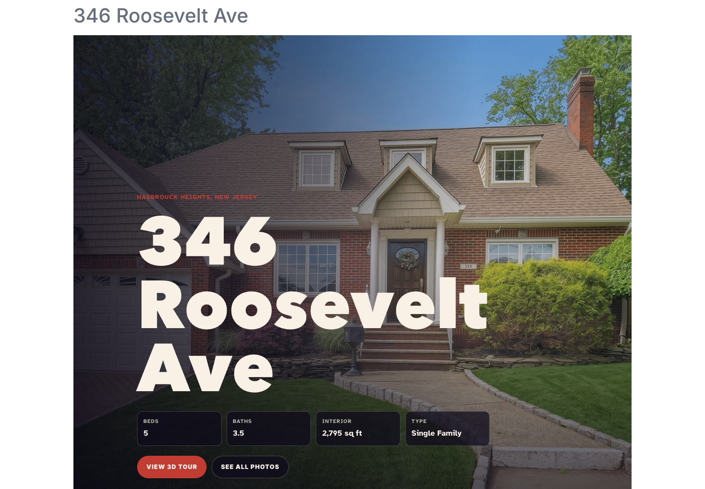

01
346 Roosevelt Ave · live pilot
One property, one place.
The listing already had everything a buyer might need. It just did not exist as one coherent experience.

public pilot · verified desktop + mobiledocumentary capture, not a concept render
The fragmented input
Property facts, 27 hosted photos, a map, a Matterport tour, three floorplans, NJJoe branding, and Joe's contact path lived across different vendor surfaces.
What changed
The inputs became a repeatable agent skill rather than another hand-built page. It validates the listing material, generates a static microsite, checks the media and layout, produces a preview, and publishes only after approval.
Human boundary
Preview before publish.
01one live listing pilot
27listing photos in one gallery
03floorplans alongside the 3D tour
01 urlproperty, media, map, and contact
Boundary: one live pilot, not a portfolio of automated listing sites. It avoids the incremental photographer-hosted microsite subscription; no dollar or time saving is claimed yet.